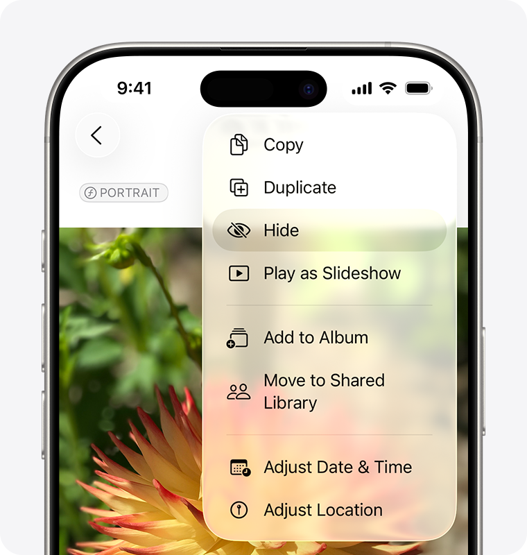
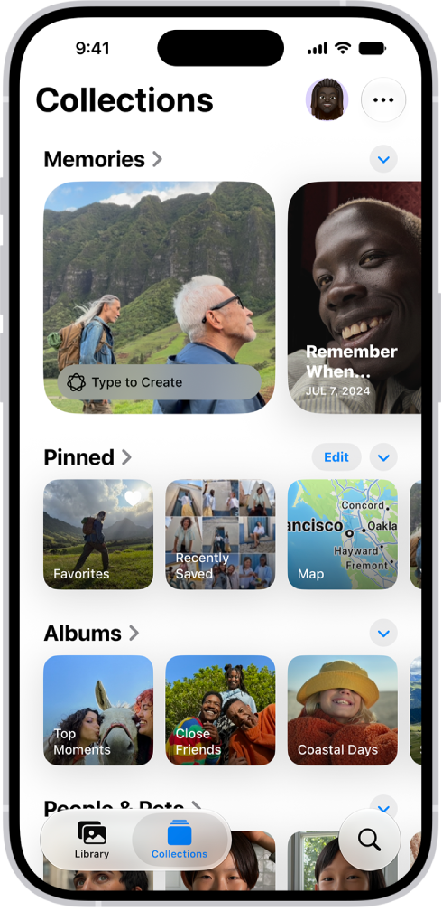

Blog · [DRAFT: noindex, not published; publish date TBD] · Mark Stepchin
Camera Roll vs a Progress Photo App: Where to Keep Your Progress Photos
Published [CONFIRM: publish date]. Apple Photos details checked against Apple Support in October 2026.
I used the iOS camera roll to store my progress photos for over two years while working with a trainer. During this time I bulked from 165 to 195 lb over 11 months, followed by a cut to 155 lb over 15 months.
The trainer's app had weekly tracking reminders which helped with consistency. The trainer's view of the app had a comparison view; mine did not. Eventually I got frustrated with my DIY comparison setups, and not finding an app that I enjoyed using, I built my own. Read more about it here.

What a good progress photo setup needs
A good progress photo setup has the following aspects:
- Camera & photo viewing/storage
- Weight & notes tracking
- Comparison & alignment
- Reminders for consistency
The camera roll and the iOS photo editor are great for taking photos, storing them, and aligning or cropping. You'll need other apps or workflows for tracking weight, photo comparison, and reminders. Dedicated apps also add quality-of-life improvements across the whole workflow.
Camera roll drawbacks
1. Camera & photo viewing/storage
Your shirtless progress photos are mixed with everything else. A separate album keeps them organized, but every photo in an album still shows up in your main Library grid next to screenshots and family photos. A dedicated app can keep progress photos outside the camera roll, inside the app.
2. Weight & notes tracking
Photos and weight live in separate places, so analyzing progress is harder. Potential solutions for tracking weight include Notes, Apple Health, or a spreadsheet. Nothing in Photos links a number to the picture on that date.
3. Comparison
The camera roll has no side-by-side photo view. To compare two check-ins you flick between them or export to Photoshop, Canva, or a collage-style app. Doing that once is fine; doing it every week for three poses is where DIY setups wear thin.
4. Alignment
Aligning photos consistently in post is difficult. Camera's grid and level help you hold the phone straight, but they can't show where your shoulders sat last week. Photos crops and rotates one photo at a time. Some dedicated apps offer manual alignment in compare view; others use AI alignment so small framing differences don't look like body change.
5. Reminders for consistency
Photos can't remind you to check in. The nudge has to live in Reminders or Calendar, and tapping it doesn't open a check-in—you still hop through Camera, Photos, and wherever you log weight.
Where the camera roll shines: data ownership & backup
Photos in your camera roll are truly under your control. That freedom lets you switch progress photo setups from one app to another without losing the originals. iCloud Photos adds backup and sync across devices; with Advanced Data Protection, your library can be end-to-end encrypted.
I always take photos with the iOS Camera app first, then upload them to a dedicated app or workflow.
Recommended camera roll setups
Hidden Photos
After each check-in, hide the shots so they leave your Library grid. In Photos, tap and hold a progress photo, tap Hide, and confirm. Hidden photos move to the locked Hidden album under Utilities—they no longer appear in your Library, other albums, or the Photos widget. With iCloud Photos on, hiding on your iPhone hides them on your other devices too. Full steps are in Apple's guide to hide photos and videos.

[TODO: downside.]
Separate collection
Keep check-ins in their own album and open it from the Collections tab. Tap Collections, then Albums, and create a new album (for example, “Progress”). After each check-in, add your front, side, and back shots to that album. You can pin the album under Pinned so it stays at the top—touch and hold the album, then tap Pin. Apple's guide to browse your photo collections covers the Collections view, reordering, and pinning.

The tradeoff: organization, not privacy. Every photo in the album still appears in your main Library grid next to everything else, so a separate album sorts check-ins without hiding them.
[TODO: one line on reminders and a collage app to round out the DIY setup.]
Import your photos in bulk
Most progress photo apps make you add old photos one check-in at a time, so years of camera roll photos stay stuck where they are. Recomp imports up to 500 photos at once and groups them into check-ins by date, so your whole history is ready to compare in a few minutes.
Conclusion
[TODO: one or two lines.]
[TODO: CTA]
Try it with your own photos
If your progress photos are sitting in your camera roll, import them into Recomp and put your first and latest check-ins side by side. It's free, with no account.


I'm still working on backup and export. If you hit an edge case or want a feature, email me at support@progressphotos.app.